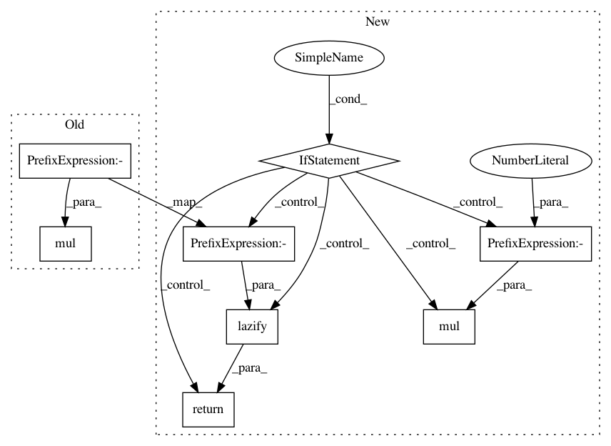

30ca6105f64f1cbbdb7f012bc848ed840e6f3682,gpytorch/models/exact_prediction_strategies.py,DefaultPredictionStrategy,exact_predictive_covar,#DefaultPredictionStrategy#Any#Any#,298
Before Change
test_train_covar = delazify(test_train_covar)
train_test_covar = test_train_covar.transpose(-1, -2)
covar_correction_rhs = train_train_covar.inv_matmul(train_test_covar).mul(-1)
if torch.is_tensor(test_test_covar):
return lazify(test_test_covar + test_train_covar @ covar_correction_rhs)
else:
return test_test_covar + MatmulLazyTensor(test_train_covar, covar_correction_rhs)
After Change
// For efficiency
if torch.is_tensor(test_test_covar):
// We can use addmm in the 2d case
if test_test_covar.dim() == 2:
return lazify(torch.addmm(1, test_test_covar, -1, test_train_covar, covar_correction_rhs))
else:
return lazify(test_test_covar + test_train_covar @ covar_correction_rhs.mul(-1))
// In other cases - we"ll use the standard infrastructure
else:
return test_test_covar + MatmulLazyTensor(test_train_covar, covar_correction_rhs.mul(-1))
precomputed_cache = self.covar_cache
In pattern: SUPERPATTERN
Frequency: 3
Non-data size: 8
Instances
Project Name: cornellius-gp/gpytorch
Commit Name: 30ca6105f64f1cbbdb7f012bc848ed840e6f3682
Time: 2019-04-12
Author: gpleiss@gmail.com
File Name: gpytorch/models/exact_prediction_strategies.py
Class Name: DefaultPredictionStrategy
Method Name: exact_predictive_covar
Project Name: cornellius-gp/gpytorch
Commit Name: 3b003f55a73db83af5774fb4d4d6face1e8cc266
Time: 2019-04-05
Author: jrg365@cornell.edu
File Name: gpytorch/models/exact_prediction_strategies.py
Class Name: DefaultPredictionStrategy
Method Name: exact_predictive_covar
Project Name: cornellius-gp/gpytorch
Commit Name: 76c081b840cd71b20d8ac8692b312ebef95eae75
Time: 2019-04-11
Author: gpleiss@gmail.com
File Name: gpytorch/models/exact_prediction_strategies.py
Class Name: DefaultPredictionStrategy
Method Name: exact_predictive_covar